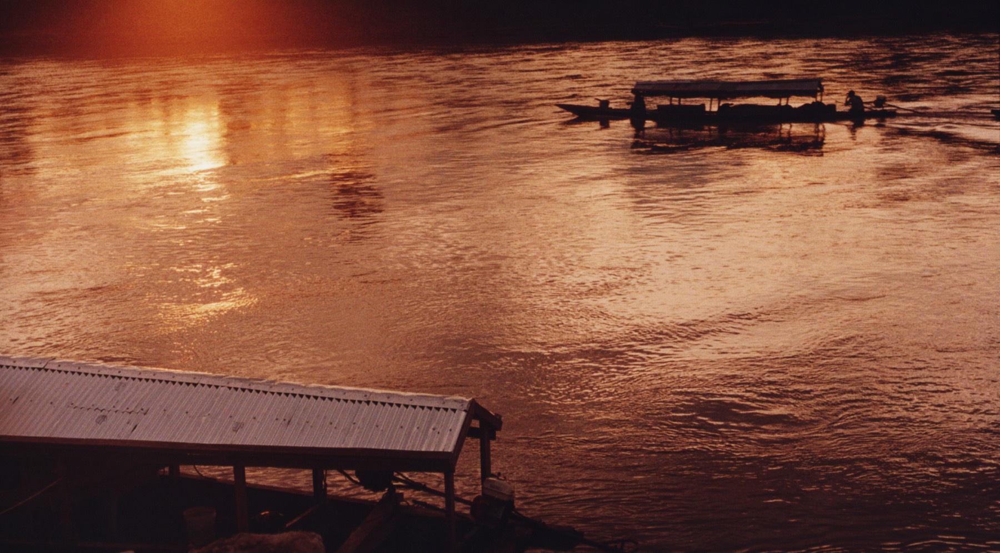

Casa productora de cine · Ciudad de México

Radio Betania 2027 · Largometraje documental · En desarrollo · Amazonía peruana · Coproducción México – España · Dirigido por: Víctor Rakosnik y Tomás Fernández Vértiz Bajo el Mismo Sol 2026 · Documental · En postproducción · Galicia, España · Dirigido por: Tomás Fernández Vértiz El Sentir de las Montañas 2022 · 53 min · Documental · Londres · Dirigido por: Tomás Fernández Vértiz Dos Noches y Tres Días (ZURDO) 2021 · 20 min · Documental de dos canales · Dirigido por: Yago Ontañón de Prado y Tomás Fernández Vértiz